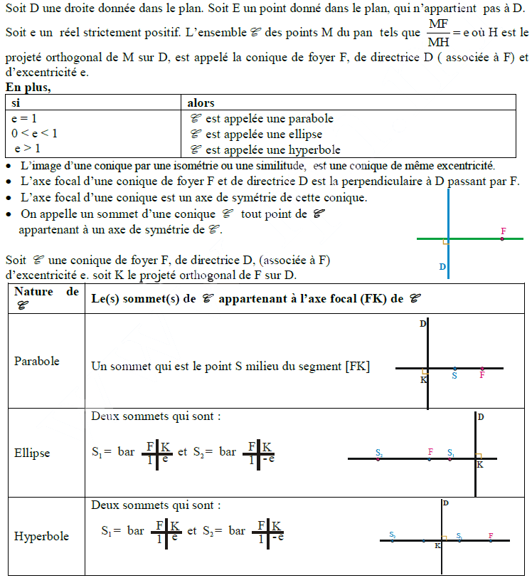
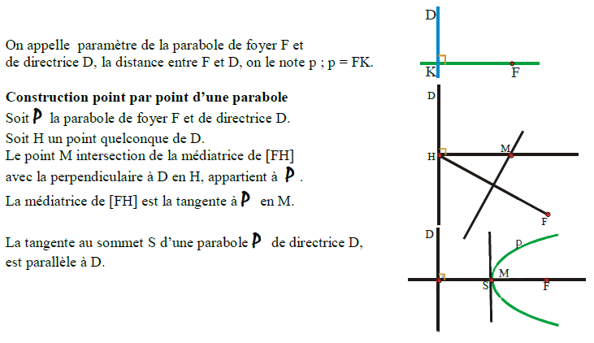
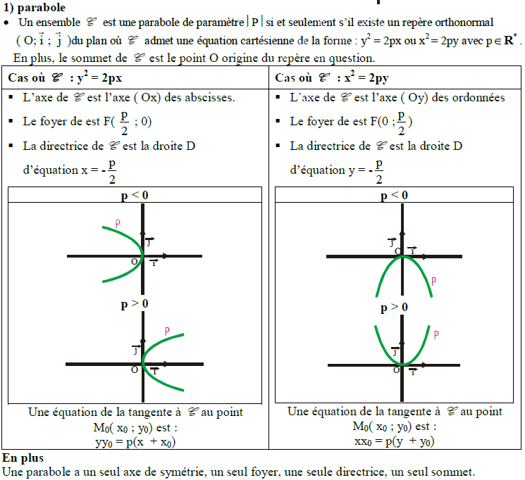
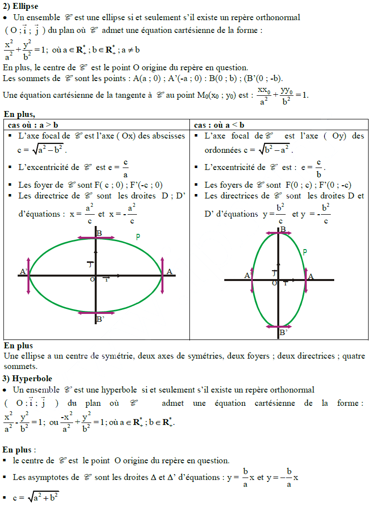
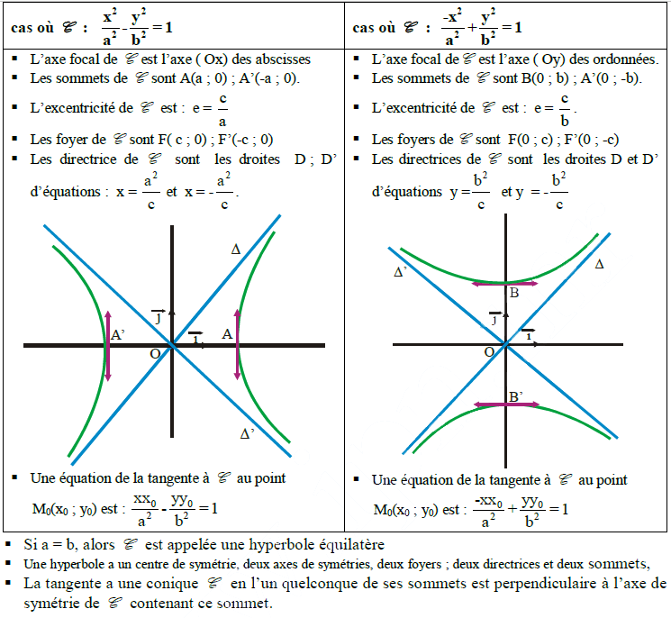
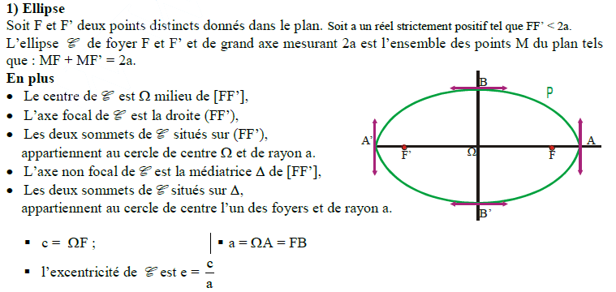
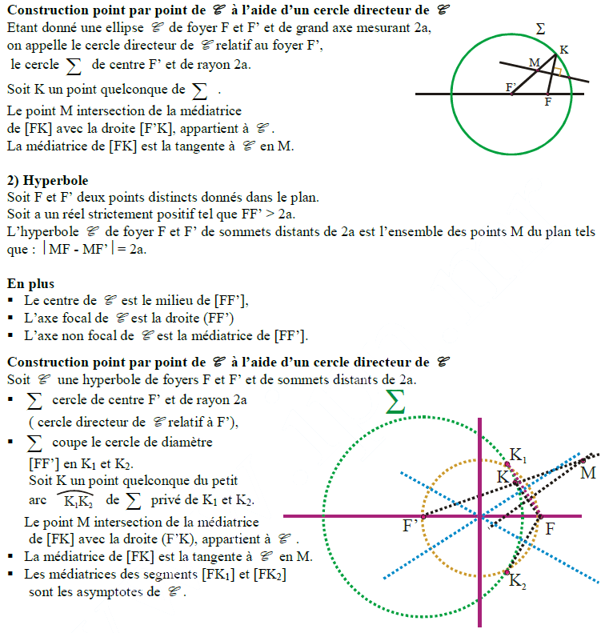

Coniques
I - Définition d’une conique par foyer, directrice et excentricité

II - A propos d’une parabole

III - Equation cartésienne réduite d’une conique



IV - Définition par les deux foyers d’une conique bifocale

